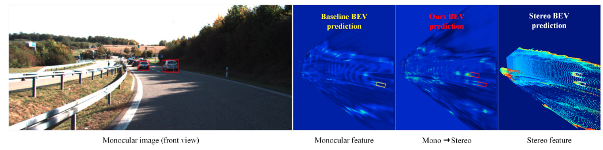

Xiaoqing Ye (叶晓青)
Ph.D |
About me
I am currently working in Shanghai as a senior RD at Department of Computer Vision Technology (VIS), Baidu Inc., focusing on the Autonomous Driving since 2019/07.
I obtained my Ph.D. degree from the Chinese Academy of Sciences (CAS) in 2019 and studied in University of Science and Technology of China (USTC) during my master's program in 2015.
I received my B.E degree from Wuhan University (WHU) in 2014.
My research interest is Autonomous Driving and 3D vision, including End-to-End AD, learning-based Planning, Perception (including multi-modal 3D object detection, polyline lane detection and occupancy network).
Please send me an email if you are interested in internship or full-time opportunities.
News
[2024] 4 papers accepted to ECCV 2024!
[2024] 1 paper accepted to CVPR 2024.
[2024] 1 paper accepted to Pattern Recognition.
[2024] 1 paper accepted to AAAI 2024.
[2024] 1 paper accepted to SCIENCE CHINA Information Sciences (SCIS) 2024 (CCF-A).
[2023] 1 paper accepted to NeurIPS 2023.
[2023] 3 papers accepted to ICCV 2023 and one paper received an Oral.
[2023] 4 Papers accepted to CVPR 2023.
[2023] 1 Paper accepted to ICRA 2023 as Oral.
[2023] 1 Paper accepted to AAAI 2023.
[2022] 1 Paper accepted to ACCV 2022 as Oral.
[2022] 1 Paper accepted to ECCV 2022.
[2022] Won two Champions both in the CVPR 2022 SoccerNet Challenge (Pitch Localization Track and Camera Calibration Track).
[2022] 2 Papers accepted to ACM MM 2022.
[2022] 1 Paper accepted to KDD 2022 as Oral.
[2022] 2 Papers accepted to CVPR 2022.
[2022] Won the Champion in CVPR AI City Challenge 2022 Track 1 (Multi-Camera Multi-Target Tracking).
[2022] 1 Paper accepted to AAAI 2022.
[2021] 2 Papers accepted to ICCV 2021.
[2021] 1 paper accepted to TPAMI 2021.
[2021] 4 Papers accepted to ACM MM 2021.
[2021] 1 Paper accepted to CVPR 2021.
[2021] Won the Champion in ROD Challenge of ICMR 2021.
[2020] 1 Paper accepted to ECCV 2020.
[2020] 1 Paper accepted to CVPR 2020.
[2020] 1 Paper accepted to AAAI 2020 as Oral.
[2020] Won the Champion in CVPR AI City Challenge 2020 Track 1 (Multi-Class Multi-Movement Vehicle Counting).
[2020] 1 Paper accepted to IROS 2020.
[2019] Won the Champion in CVPR AI City Challenge 2019 Track 2 (City-Scale Multi-Camera Vehicle Re-Identification).
[2019] 1 Paper accepted to ICCV 2019.
[2018] 1 Paper accepted to ECCV 2018.
Publications
*Equal contribution, †Corresponding author
 |
Xiaofan Li, Yifu Zhang, Xiaoqing Ye† European Conference on Computer Vision (ECCV) 2024 PDF Project Code |
Zhe Liu, Jinghua Hou, Xiaoqing Ye, Tong Wang, Jingdong Wang, Xiang Bai European Conference on Computer Vision (ECCV) 2024 PDF Project Code |
Jinghua Hou, Tong Wang, Xiaoqing Ye, Zhe Liu, Shi Gong, Xiao Tan, Errui Ding, Jingdong Wang, Xiang Bai European Conference on Computer Vision (ECCV) 2024 PDF Project Code |
Yumeng Zhang, Shi Gong, Kaixin Xiong, Xiaoqing Ye†, Xiao Tan, Fan Wang, Jizhou Huang†, Hua Wu, Haifeng Wang Arxiv 2024 PDF Code |
Jiankun Li, Hao Li, Jiangjiang Liu, Zhikang Zou, Xiaoqing Ye†, Fan Wang, Jizhou Huang†, Hua Wu, Haifeng Wang Arxiv 2024 PDF Code |
Xuanmeng Zhang, Zhedong Zheng, Minyue Jiang, Xiaoqing Ye Pattern Recognition, 2024 |
Wenjie Wang, Yehao Lu, Guangcong Zheng, Shuigen Zhan, Xiaoqing Ye, Zichang Tan, Jingdong Wang, Gaoang Wang, Xi Li IEEE/CVF Conference on Computer Vision and Pattern Recognition (CVPR) 2024 PDF Code |
Dingkang Liang, Wei Hua, Chunsheng Shi, Zhikang Zou, Xiaoqing Ye, Xiang Bai Arxiv 2024 PDF Code |
Guibiao Liao, Jiankun Li, Zhenyu Bao, Xiaoqing Ye, Jingdong Wang, Qing Li, Kanglin Liu Arxiv 2024 |
Guibiao Liao, Jiankun Li, Xiaoqing Ye† AAAI Conference on Artificial Intelligence (AAAI) 2024 |
Dingkang Liang, Xin Zhou, Xinyu Wang, Xingkui Zhu, Wei Xu, Zhikang Zou, Xiaoqing Ye, Xiang Bai Arxiv 2024 PDF Code |
Dingyuan Zhang, Dingkang Liang, Hongcheng Yang, Zhikang Zou, Xiaoqing Ye, Zhe Liu, Xiang Bai SCIENCE CHINA Information Sciences (SCIS) 2024. PDF Code |
Xiang Guo, Jiadai Sun, Yuchao Dai, Guanying Chen, Xiaoqing Ye, Xiao Tan, Errui Ding, Yumeng Zhang, Jingdong Wang International Conference on Computer Vision (ICCV) 2023 (Oral Presentation) PDF Project |
Jiang-Tian Zhai, Ze Feng, Jinhao Du, Yongqiang Mao, Jiang-Jiang Liu, Zichang Tan, Yifu Zhang, Xiaoqing Ye, Jingdong Wang Technical Report 2023 PDF Code |
 |
Jianhui Liu, Yukang Chen, Xiaoqing Ye, Xiaojuan Qi International Conference on Computer Vision (ICCV) 2023 PDF Code |
Dingyuan Zhang, Dingkang Liang, Zhikang Zou, Jingyu Li, Xiaoqing Ye, Zhe Liu, Xiao Tan, Xiang Bai International Conference on Computer Vision (ICCV) 2023 |
Xin Zhou, Jinghua Hou, Tingting Yao, Dingkang Liang, Zhe Liu, Zhikang Zou, Xiaoqing Ye, Jianwei Cheng, Xiang Bai Arxiv 2023 |
 |
Zhe Liu, Xiaoqing Ye, Zhikang Zou, Xinwei He, Xiao Tan, Errui Ding, Jingdong Wang, Xiang Bai Arxiv 2023 PDF Code |
Kaixin Xiong, Shi Gong, Xiaoqing Ye*, Xiao Tan, Ji Wan, Errui Ding, Jingdong Wang, Xiang Bai IEEE/CVF Conference on Computer Vision and Pattern Recognition (CVPR) 2023. PDF Code |
Dingkang Liang, Jiahao Xie, Zhikang Zou, Xiaoqing Ye, Wei Xu, Xiang Bai IEEE/CVF Conference on Computer Vision and Pattern Recognition (CVPR) 2023 PDF Code |
Wei Hua, Dingkang Liang, Jingyu Li, Xiaolong Liu, Zhikang Zou, Xiaoqing Ye, Xiang Bai IEEE/CVF Conference on Computer Vision and Pattern Recognition (CVPR) 2023 PDF Code |
 |
Ruihang Chu, Zhengzhe Liu, Xiaoqing Ye, Xiao Tan, Xiaojuan Qi, Chi-Wing Fu, Jiaya Jia IEEE/CVF Conference on Computer Vision and Pattern Recognition (CVPR) 2023 |
Jinghua Hou, Zhe Liu, dingkang liang, Zhikang Zou, Xiaoqing Ye, Xiang Bai Neural Information Processing Systems (NeurIPS) 2023 PDF Code |
Peizhe Jiang, Wei Yang, Xiaoqing Ye, Xiao Tan, Meng Wu IEEE International Conference on Robotics and Automation (ICRA) 2023 (Oral Presentation) PDF Code |
Zhe Liu, Xiaoqing Ye, Xiao Tan, Errui Ding, Xiang Bai AAAI Conference on Artificial Intelligence (AAAI) 2023 |
Yifu Zhang, Xinggang Wang, Xiaoqing Ye, Wei Zhang, Jincheng Lu, Xiao Tan, Errui Ding, Peize Sun, Jingdong Wang Arxiv 2023 PDF Project Code |
Xiaoqing Ye*, Mao Shu*, Hanyu Li, Yifeng Shi, Yingying Li, Guangjie Wang, Xiao Tan, Errui Ding IEEE/CVF Conference on Computer Vision and Pattern Recognition (CVPR) 2022 PDF Project Code |
Ruihang Chu, Xiaoqing Ye, Zhengzhe Liu, Xiao Tan, Xiaojuan Qi, Chi-Wing Fu, Jiaya Jia IEEE/CVF Conference on Computer Vision and Pattern Recognition (CVPR) 2022 |
Jianhui Liu, Yukang Chen, Xiaoqing Ye, Zhuotao Tian, Xiao Tan, Xiaojuan Qi Neural Information Processing Systems (NeurIPS) 2022 PDF Code |
Shi Gong*, Xiaoqing Ye*, Xiao Tan, Jingdong Wang, Errui Ding, Yu Zhou, Xiang Bai European Conference on Computer Vision (ECCV) 2022 PDF Code |
Jiayi Han, Liang Du, Xiaoqing Ye, Li Zhang, Jianfeng Feng Neuralcomputing 2022 |
Bo Ju, Zhikang Zou, Xiaoqing Ye†, Minyue Jiang, Xiao Tan, Errui Ding, Jingdong Wang ACM International Conference on Multimedia (MM) 2022 |
 |
Xiang Guo, Guanying Chen, Yuchao Dai, Xiaoqing Ye, Jiadai Sun, Xiao Tan, Errui Ding Asian Conference on Computer Vision (ACCV) 2022 (Oral Presentation) PDF Project Code |
Jianzhong Yang*, Xiaoqing Ye*, Bin Wu, Yanlei Gu, Ziyu Wang, Deguo Xia, Jizhou Huang ACM SIGKDD Conference on Knowledge Discovery and Data Mining (KDD) 2022 (Oral Presentation) |
|  | Zheyuan Zhou*, Liang Du*, Xiaoqing Ye*, Zhikang Zou, Xiao Tan, Li Zhang, Xiangyang Xue, Jianfeng Feng IEEE Robotics and Automation Letters (RA-L) 2022 PDF Project |
Jiayi Han, Longbin Zeng, Liang Du, Xiaoqing Ye, Weiyang Ding, Jianfeng Feng AAAI Conference on Artificial Intelligence (AAAI) 2022 |
Liang Du, Xiaoqing Ye, Xiao Tan, Edward Johns, Bo Chen, Errui Ding, Xiangyang Xue, Jianfeng Feng IEEE Transactions on Pattern Analysis and Machine Intelligence (TPAMI) 2021 |
Xipeng Yang, Jin Ye, Jincheng Lu, Chenting Gong, Minyue Jiang, Xiangru Lin, Wei Zhang, Xiao Tan, Yingying Li, Xiaoqing Ye, Errui Ding IEEE/CVF Conference on Computer Vision and Pattern Recognition Workshops (CVPRw) 2022 PDF Code |
Zhikang Zou*, Xiaoqing Ye*, Liang Du*, Xianhui Cheng*, Xiao Tan, Li Zhang, Jianfeng Feng, Xiangyang Xue, Errui Ding International Conference on Computer Vision (ICCV) 2021 |
Zhi Chen, Xiaoqing Ye, Zhikang Zou, Wei Yang, Zhenbo Xu, Xiao Tan, Zhikang Zou, Errui Ding, Xinming Zhang, Liusheng Huang International Conference on Computer Vision (ICCV) 2021 |
Li Wang*, Liang Du*, Xiaoqing Ye*, Yanwei Fu, Guodong Guo, Xiangyang Xue, Jianfeng Feng, Li Zhang IEEE/CVF Conference on Computer Vision and Pattern Recognition (CVPR) 2021 PDF Project |
Zhi Chen*, Xiaoqing Ye*, Liang Du, Wei Yang, Liusheng Huang, Xiao Tan, Zhenbo Shi, Fumin Shen, Errui Ding ACM International Conference on Multimedia (MM) 2021 |
Tianhao Fu*, Yingying Li*, Xiaoqing Ye*, Xiao Tan, Hao Sun, Fumin Shen, Errui Ding ACM International Conference on Multimedia (MM) 2021 |
Zhikang Zou, Xiaoye Qu, Pan Zhou, Shuangjie Xu, Xiaoqing Ye, Wenhao Wu, Jin Ye ACM International Conference on Multimedia (MM) 2021 |
Qiming Wu, Zhikang Zou, Pan Zhou, Xiaoqing Ye, Binghui Wang, Ang Li ACM International Conference on Multimedia (MM) 2021 |
Bo Ju, Wei Yang, Jinrang Jia, Xiaoqing Ye, Qu Chen, Xiao Tan, Hao Sun, Yifeng Shi, Errui Ding International Conference on Multimedia Retrieval (ICMR) 2021 |
Xiaoqing Ye*, Liang Du*, Yifeng Shi, Yingying Li, Xiao Tan, Jianfeng Feng, Errui Ding, Shilei Wen European Conference on Computer Vision (ECCV) 2020 |
Zhenbo Xu, Wei Zhang, Xiaoqing Ye, Xiao Tan, Wei Yang, Shilei Wen, Errui Ding, Ajin Meng, Liusheng Huang AAAI Conference on Artificial Intelligence (AAAI) 2020 (Oral Presentation) PDF Code |
Liang Du*, Xiaoqing Ye*, Xiao Tan, Jianfeng Feng, Zhenbo Xu, Errui Ding, Shilei Wen IEEE/CVF Conference on Computer Vision and Pattern Recognition (CVPR) 2020 PDF Code |
Guanghui Zhang, Dongchen Zhu, Xiaoqing Ye, Wenjun Shi, Minghong Chen, Jiamao Li, Xiaolin Zhang IEEE/RSJ International Conference on Intelligent Robots and Systems (IROS) 2020 |
Jinhui Liu*, Zhikang Zou*, Xiaoqing Ye*, Xiao Tan, Errui Ding, Feng Xu, Xin Yu European Conference on Computer Vision Workshops (ECCVw) 2020 |
Zhongji Liu, Wei Zhang, Xu Gao, Hao Meng, Xiao Tan, Xiaoxing Zhu, Zhan Xue, Xiaoqing Ye, Hongwu Zhang, Shilei Wen, Errui Ding IEEE/CVF Conference on Computer Vision and Pattern Recognition Workshops (CVPRw) 2020 PDF Code |
Xiao Tan, Zhigang Wang, Minyue Jiang, Xipeng Yang, Jian Wang, Yuan Gao, Xiangbo Su, Xiaoqing Ye, Yuchen Yuan, Dongliang He, Shilei Wen, Errui Ding IEEE/CVF Conference on Computer Vision and Pattern Recognition Workshops (CVPRw) 2019 PDF Code |
Liang Du, Jingang Tan, Hongye Yang, Jianfeng Feng, Xiangyang Xue, Qibao Zheng, Xiaoqing Ye, Xiaolin Zhang IEEE International Conference on Computer Vision (ICCV) 2019 PDF Code |
Xiaoqing Ye, Jiamao Li, Hexiao Huang, Liang Du, Xiaolin Zhang European Conference on Computer Vision (ECCV) 2018 |
Xiaoqing Ye, Yuzhang Gu, Lili Chen, Jiamao Li, Han Wang, Xiaolin Zhang IEEE Signal Processing Letters (IEEE SP-L) 2017 |
Xiaoqing Ye, Jiamao Li, Han Wang, Xiaolin Zhang IEICE TRANSACTIONS on Information and Systems 2017 |
Professional Activities
- Journal Reviewer of TPAMI, IJCV, TCSVT etc.
- Conference Reviewer of CVPR, ECCV, ICCV, AAAI, NeurIPS, etc., and serving as a Senior Program Committee (SPC) member of AAAI.
Part of the Work I Participated in
- [Video] UniBEV: Road-Vehicle Cooperative Perception for Autonomous Driving | Baidu Create 2022
- [Video] 文心大模型在自动驾驶感知的落地应用 & 汽车智能化时代的L4/L2+技术共生 | Baidu Apollo Day 2022
- [V2X 3D Object Detection Dataset Download] & [Related Paper] Rope3D: The Roadside Perception Dataset for Autonomous Driving and Monocular 3D Object Detection Task
Other Interests
 |